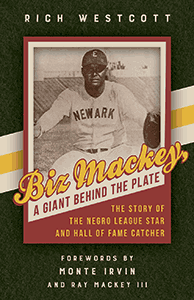

<body bgcolor="#FFFFFF" text="#000000" link="#0000FF" vlink="#CC0000" alink="#CC0000"><center><hr width="350" size="1" align="center" noshade>The first biography of arguably the greatest catcher in the Negro Leagues<hr width="350" size="1" align="center" noshade><p><a href="https://cdcshoppingcart.uchicago.edu/Cart/ChicagoBook.aspx?ISBN=&&PRESS=temple" target="_top">Buy this book!</a> | <a href="https://cdcshoppingcart.uchicago.edu/Cart/Cart.aspx?PRESS=temple" target="_top">View Cart</a> | <a href="https://cdcshoppingcart.uchicago.edu/Cart/Cart.aspx?PRESS=temple" target="_top">Check Out</a></p><p></p></center><!--none//--><h1 class = "booktitle">Biz Mackey, a Giant behind the Plate</h1> <h1 class = "subtitle">The Story of the Negro League Star and Hall of Fame Catcher</h1>
<h3>Rich Westcott Forewords by Monte Irvin and Ray Mackey III</h3>
<p class="info">cloth: $27.50, Feb 18<BR>EAN:&nbsp;978-1-4399-1551-6<BR><font color=#990033>Not Yet Published Preorder</FONT><font size=-7><br>&nbsp;</font></p><p class="info"></p></td></tr></table>
<BR> <p class="info">160 pp<BR> 5.375 x 8.5<BR> 1 tables, 3 figs., 20 halftones <p class="info"><font size=-7>&nbsp;</font></p><p class="info">
</P><BLOCKQUOTE></BLOCKQUOTE>
<p><i>"The best all-around catcher in black baseball history"-Cumberland Posey, Owner of the Homestead Grays<br/></i><br/>National Baseball Hall of Fame catcher James Raleigh "Biz" Mackey's professional career spanned nearly three decades in the Negro Leagues and elsewhere. He distinguished himself as a defensive catcher who also had an impressive batting average and later worked as a manager of the Newark Eagles and the Baltimore Elite Giants.<br/><br/>Using archival materials and interviews with former Negro League players, baseball historian Rich Westcott chronicles the catcher's life and remarkable career in <i>Biz Mackey </i>as well as providing an in-depth look at Philadelphia Negro League history. Westcott traces Mackey's childhood in Texas as the son of sharecroppers to his success on the baseball diamond where he displayed extraordinary defensive skills and an exceptional ability to hit and to handle pitchers. Mackey spent one third of his career playing in Philadelphia, winning championships with the Hilldale Daisies and the Philadelphia Stars. Mackey also mentored famed catcher Roy Campanella and had an unlikely role in the story of baseball's development in Japan.<br/><br/>A celebrated ballplayer before African Americans were permitted to join Major League Baseball, Biz Mackey ranks as one of the top catchers ever to play the game. With <i>Biz Mackey, </i>he finally gets the biography he deserves.<br>
<P CLASS="top"><A HREF="#top">BACK TO TOP</A></P>&nbsp;
<BR>&nbsp;
&nbsp;<P>
</P><BR>&nbsp;
<H2 class="inpageheading"><A NAME="author bio"></a>About the Author(s)</H2><p><b>Rich Westcott</b> is the author of 25 previous books. A newspaper and magazine writer, an editor for more than 40 years, and a former president of the Philadelphia Sports Writers Association, he has written for numerous national publications. He was the founding publisher of the newspaper <i>Phillies Report</i>, which covered the team for fourteen years, and has appeared in 10 film documentaries about baseball. A special advisor to the Philadelphia Sports Hall of Fame, he is also an inductee into four halls of fame.<br>
<P CLASS="top"><A HREF="#top">BACK TO TOP</A></P>
<p><h2 class="inpageheading"><a name="subjects"></a>Subject Categories</h2> <p><a href="http://www.temple.edu/tempress/sports.html" target="_top">Sports</a> <br><a href="http://www.temple.edu/tempress/philly.html" target="_top">Philadelphia Region</a> <br><a href="http://www.temple.edu/tempress/biography.html" target="_top">Biography/Memoir/Autobiography</a> <br><a href="" target="_top"></a> <br><a href="" target="_top"></a> </p>
</p>
<P>
</P>
<p align="center"><a href="https://cdcshoppingcart.uchicago.edu/Cart/ChicagoBook.aspx?ISBN=&&PRESS=temple" target="_top">Buy this book!</a> | <a href="https://cdcshoppingcart.uchicago.edu/Cart/Cart.aspx?PRESS=temple" target="_top">View Cart</a> | <a href="https://cdcshoppingcart.uchicago.edu/Cart/Cart.aspx?PRESS=temple" target="_top">Check Out</a></p><p><font face="Arial" size="1"><a href="copyright.html" onMouseOver="window.status='Web Copyright Policy';return true;" onMouseOut="window.status=''" title="Web Copyright Policy">&copy;</a> 2018 <a href="http://www.temple.edu" target="new" onMouseOver="window.status='Link to Temple University home page';return true;" onMouseOut="window.status=''" title="Link to Temple University home page">Temple University</a>. All Rights Reserved. http://www.temple.edu/tempress/titles/2476_reg.html</font></p>